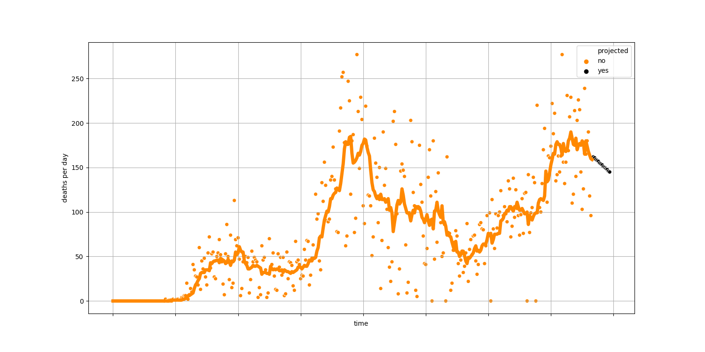
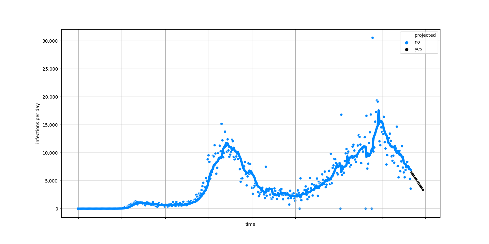

- Whole US
- Sortable table
- Alabama
- Alaska
- American Samoa
- Arizona
- Arkansas
- California
- Colorado
- Connecticut
- Delaware
- District of Columbia
- Florida
- Georgia
- Guam
- Hawaii
- Idaho
- Illinois
- Indiana
- Iowa
- Kansas
- Kentucky
- Louisiana
- Maine
- Maryland
- Massachusetts
- Michigan
- Minnesota
- Mississippi
- Missouri
- Montana
- Nebraska
- Nevada
- New Hampshire
- New Jersey
- New Mexico
- New York
- North Carolina
- North Dakota
- Northern Mariana Islands
- Ohio
- Oklahoma
- Oregon
- Pennsylvania
- Puerto Rico
- Rhode Island
- South Carolina
- South Dakota
- Tennessee
- Texas
- U.S. Virgin Islands
- Utah
- Vermont
- Virginia
- Washington
- West Virginia
- Wisconsin
- Wyoming
Florida has had about 2,773 COVID-19 deaths and 62,758 confirmed cases. That's about 3 out of every 1,000 people who we know are or have been infected. About 4.42% of people who have tested positive have died.
There are about 46 new deaths every day. At this rate, about 3,100 total people will have died of COVID-19 in 7 days. This chart shows the number of deaths each day since the first case was identified. The dots are the total number of deaths for each day and the line is the average of the previous seven days. 
There are about 1,186 new cases identified every day. At the current rate, the total number of confirmed cases will be about 71,000 in 7 days. This chart shows the number of new cases each day since the first case was identified. The dots are the total number of new cases for each day and the line is the average of the previous seven days. 
This chart shows the percentage of tests that result in positive
diagnoses. The dots are the percentage for each day and the line is
the average of the previous seven days. A lower number suggests that
testing is adequate while a higher number suggests that people who
are infected are not getting tested.